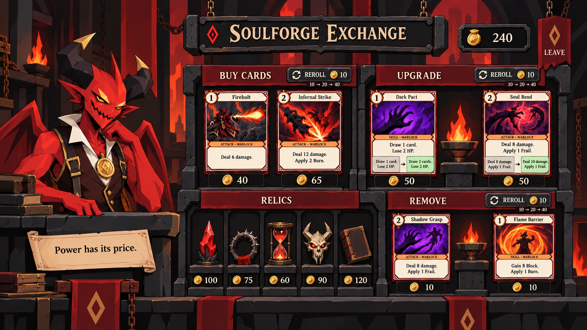
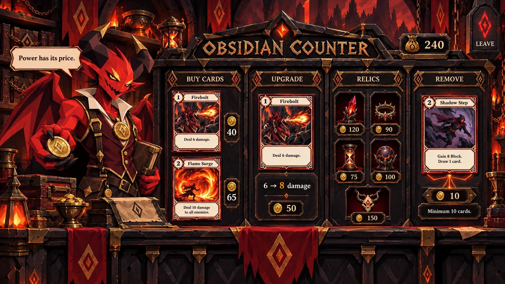
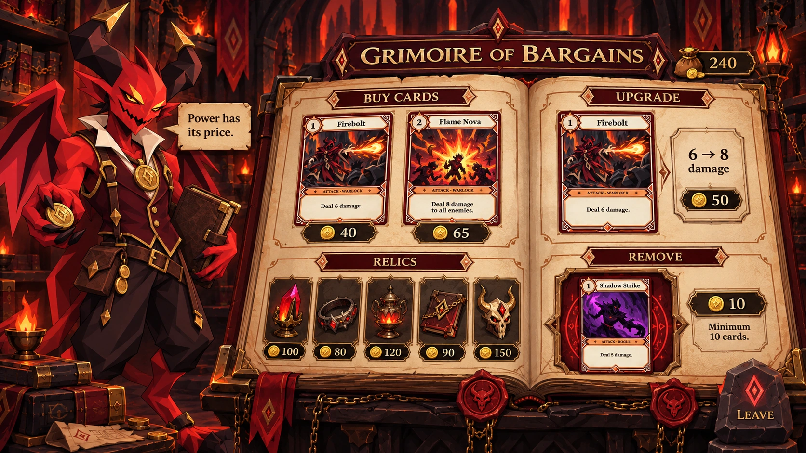
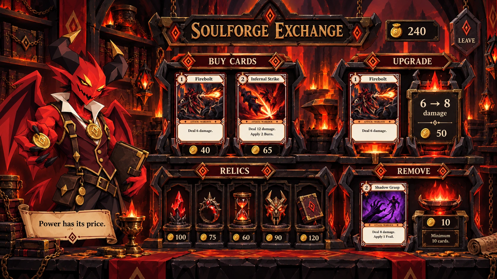

Soulforge Exchange · Simplified revision
Your selected cel-shaded layout with four retained diamonds, aligned braziers, and two offers each for Buy, Upgrade and Remove. Rerolls start at 10 gold and double independently per service.

1 · Obsidian Counter
A carved black-stone cabinet, brass fittings and velvet-lined card recesses. Clear vertical service bays.

2 · Grimoire of Bargains
A giant illuminated ledger, parchment compartments and wax seals. The brightest and most readable treatment.

3 · Soulforge Exchange
Iron card clamps and ritual furnaces. Upgrades and removal feel like work performed at a demonic forge.
